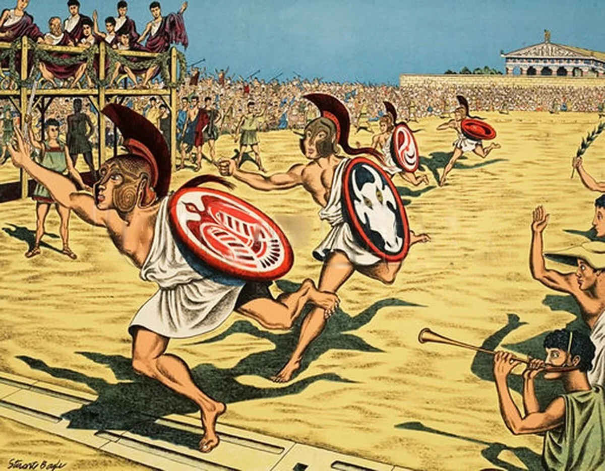
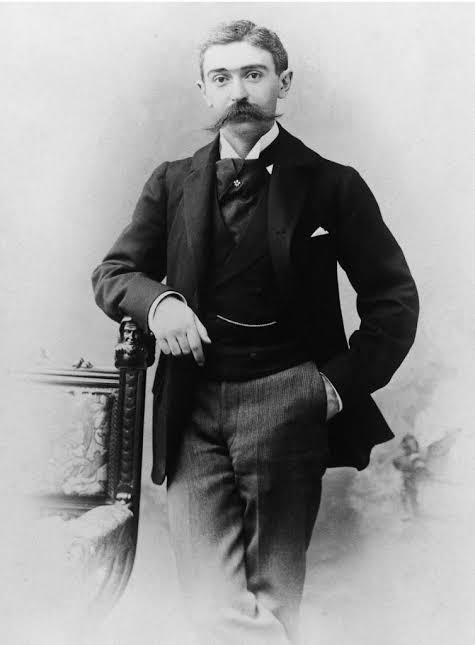

Os Jogos Olímpicos na Grécia têm uma importância histórica e cultural imensa, sendo um dos eventos mais antigos e icónicos da civilização ocidental. Eles foram realizados pela primeira vez em Olímpia, na Grécia Antiga, por volta de 776 a.C. Esses jogos eram dedicados a Zeus, o deus supremo da mitologia grega, e faziam parte de um festival religioso que incluía sacrifícios e celebrações. Os jogos eram realizados a cada quatro anos e atraíam competidores de várias cidades-estado gregas.
As competições incluíam corridas a pé, luta livre, pugilato, corrida de bigas, e o pentatlo, que combinava cinco eventos: corrida, salto em comprimento, arremesso de disco, arremesso de dardo e luta livre. Apenas homens gregos livres podiam participar, e eles competiam nus. As mulheres não eram autorizadas a competir nem a assistir, exceto as sacerdotisas de Deméter, que tinham um lugar reservado. Os vencedores eram altamente respeitados e recebiam coroas de folhas de oliveira, além de outros prêmios e honras em suas cidades de origem. Os Jogos Olímpicos Antigos continuaram por quase 12 séculos, até serem abolidos pelo imperador romano Teodósio I em 393 d.C., como parte de sua campanha para suprimir os cultos pagãos em favor do Cristianismo.

A ideia de reviver os Jogos Olímpicos surgiu no final do século XIX, liderada por Pierre de Coubertin, um educador francês. Ele acreditava que o esporte poderia promover a paz mundial e a compreensão entre os povos. Assim, os primeiros Jogos Olímpicos modernos foram realizados em Atenas, na Grécia, em 1896, em homenagem às origens gregas dos jogos antigos. Esses jogos contaram com 241 atletas de 14 países, competindo em 43 eventos, principalmente no atletismo, ciclismo, esgrima, ginástica, natação, tênis e levantamento de peso.
A Grécia sediou novamente os Jogos Olímpicos em 2004, também em Atenas. Estes jogos foram um evento marcante, que celebrou a rica herança olímpica da Grécia enquanto apresentava um espetáculo moderno com atletas de todo o mundo. Com a participação de mais de 10.000 atletas de 201 países, os Jogos de Atenas 2004 destacaram-se tanto pelo sucesso desportivo quanto pelos desafios económicos que deixaram marcas no país.

Os Jogos Olímpicos na modernidade representam um dos maiores eventos desportivos globais, celebrando a união entre nações através da competição saudável e do espírito desportivo. Revitalizados em 1896, os Jogos Olímpicos modernos têm uma história rica e são marcados por uma evolução constante, refletindo as mudanças sociais, políticas e tecnológicas do mundo.
Desde 1896, os Jogos Olímpicos cresceram enormemente, tanto em termos de participação quanto em diversidade de modalidades. O número de atletas e países participantes aumentou exponencialmente, tornando os Jogos um evento verdadeiramente global.
Os Jogos Olímpicos modernos não são apenas uma celebração do esporte, mas também têm um impacto significativo nas cidades-sede e na política internacional. Ao longo da história, os Jogos enfrentaram vários boicotes e tensões políticas, como os boicotes dos Jogos de Moscovo em 1980 e de Los Angeles em 1984, que refletiram as tensões da Guerra Fria. Além disso, os Jogos de Munique em 1972 foram tragicamente marcados por um ataque terrorista.
Sediar os Jogos Olímpicos é uma honra, mas também representa um desafio económico. Enquanto as cidades investem pesadamente em infraestrutura, muitas vezes ficam com dívidas elevadas e instalações subutilizadas após os jogos. A cobertura mediática dos Jogos também evoluiu drasticamente. Hoje, bilhões de pessoas ao redor do mundo assistem aos Jogos ao vivo, graças à televisão e às plataformas de streaming, tornando os Jogos Olímpicos um evento global em tempo real.
Os Jogos Olímpicos mais recentes, como os de Tóquio 2020 (realizados em 2021 devido à pandemia de COVID-19), mostraram a resiliência e a adaptabilidade do movimento olímpico. Apesar dos desafios, incluindo a ausência de espectadores, os Jogos foram bem-sucedidos em proporcionar uma competição segura e emocionante. Os Jogos Olímpicos modernos mantêm o espírito original de promover a paz e a amizade entre as nações. Eles são um palco onde atletas de todo o mundo podem competir ao mais alto nível, representando não apenas o seu talento, mas também as suas culturas e nações. Os Jogos Olímpicos continuam a ser uma celebração da humanidade, refletindo o progresso global e o desejo contínuo de superação e união através do esporte.